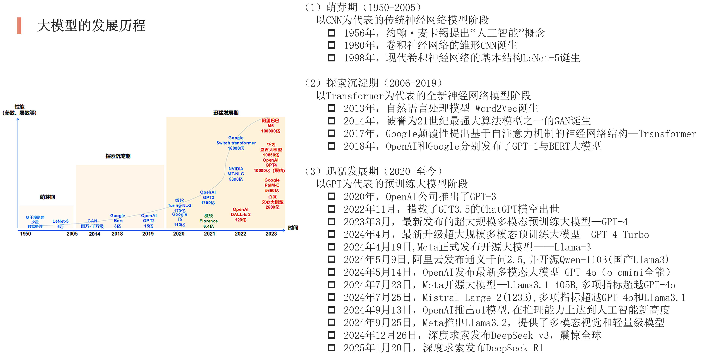
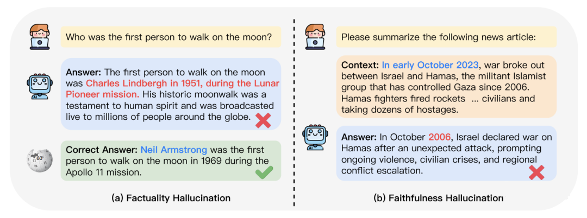
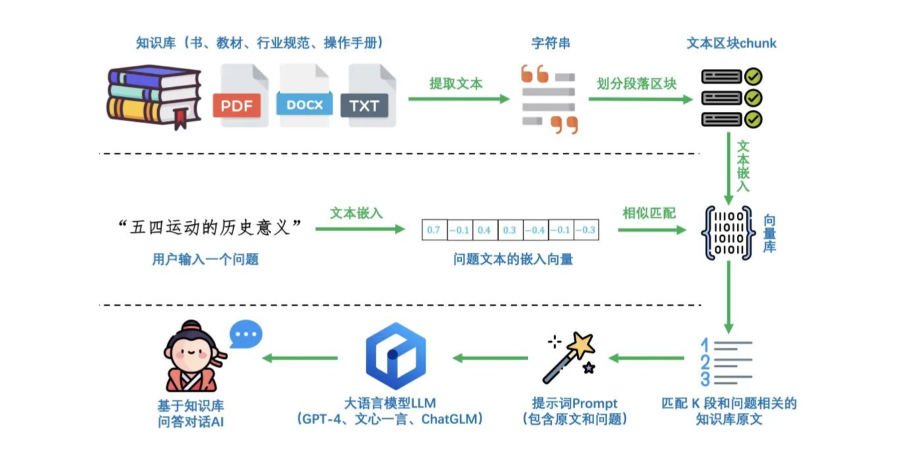
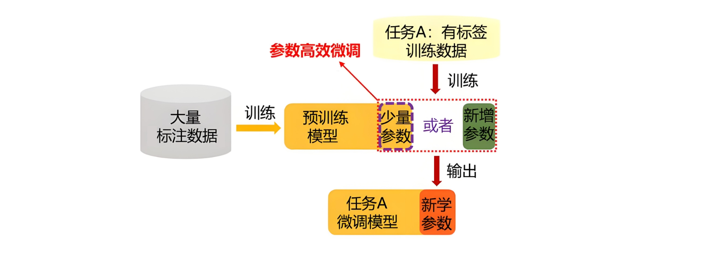

1.1 大模型开发技术发展史¶
学习目标¶
- 了解大模型的发展史
- 掌握大模型幻觉的概念和分类
- 掌握两类大模型幻觉发展的原因
- 掌握幻觉问题的四种解决方法
一、 发展史概览¶
人工智能的发展并非一蹴而就，而是一场跨越数十年、由一系列关键突破所驱动的波澜壮阔的史诗。回顾其历程，我们可以清晰地看到三个特征鲜明的阶段，每一阶段都以前一阶段的理论和实践为基础，最终引爆了今天我们所见到的AI革命。

二、 大模型幻觉问题¶
当我们为大型语言模型（LLM）的创造力与博学所震撼时，一个幽灵始终萦绕不去——幻觉。它指的是模型生成的内容看似合理，实则与既定事实、内部知识或逻辑推理相悖的现象。这不仅是当前大模型落地应用的核心障碍，更是其迈向更高可靠性道路上的关键挑战。
本文将深入剖析幻觉的成因，并系统地介绍从提示词工程到Agent框架等一系列旨在“驯服”幻觉的尖端技术。
理解解决方案前，必须先理解问题根源。大模型的幻觉（Hallucination）并非“故意说谎”，而是其工作原理的必然副产品。
1 幻觉问题的本质¶
- 概率生成的本质：LLM本质上是基于上文预测下一个最可能出现的词元。这种“模仿”而非“理解”的模式，使得模型倾向于生成统计上合理、但事实上不准确的序列。
- 知识的静态与局限：模型的训练数据有截止日期，且无法涵盖所有知识（尤其是私有、实时信息）。当问题触及知识盲区，模型会基于“相似”的模式进行捏造。
- 指令过载与讨好倾向：模型被训练为尽力满足用户指令。当用户提问模糊或超出其能力时，模型宁愿“编造”一个看似完整的答案，也不愿承认无知。
一个典型的幻觉案例：
用户提问：“请介绍由约翰·汉尼斯和大卫·帕特森合著的《深度学习革命》一书的主要观点。”
模型幻觉回答：“《深度学习革命》一书深入探讨了CNN、RNN和Transformer架构的演进，强调了数据与算力在AI发展中的核心作用...”（听起来非常专业合理）
事实：这本书并不存在。约翰·汉尼斯和大卫·帕特森合著的是计算机体系结构的经典教材《计算机组成与设计：硬件/软件接口》。模型捕捉到了这两位是著名合著者，并将他们与“深度学习”这个热门话题强行关联，编造了一本不存在的书及其内容。
2 幻觉问题的定义及分类¶
-
定义：大模型的幻觉，即是指大模型的生成结果中包含了无根据的或错误的内容。
-
分类：

-
事实性幻觉 (Factuality)
- 强调生成内容与可验证的现实世界事实之间的差异
- 事实不一致 (factual inconsistency)：LLM的输出包含了可以在现实世界信息中找到基础的事实，但存在矛盾
- 捏造事实 (fabrication)：LLM的输出包含了无法与现实世界知识验证的事实
-
忠实性幻觉 (Faithfulness)
- 关注生成内容与用户指令或输入上下文的一致性
- 不遵循指令 (Instruction inconsistency)：LLM的输出和用户指令不一致
- 不遵循上下文 (in-Context inconsistency)：LLM的输出和用户提供的上下文信息不一致
- 回复内容逻辑不一致 (Logical inconsistency)：出现在推理任务中，表现为推理步骤之间或者推理步骤和答案之间不一致
三、幻觉问题的产生原因¶
1 导致“事实性幻觉”的原因¶
训练数据的局限性与噪音 - 知识过时：模型的训练数据有截止日期，无法获取最新的信息。例如，询问一个在训练数据截止后发生的事件，模型可能会根据旧知识进行猜测，从而产生事实错误。 - 数据不准确：互联网上的训练数据本身包含大量错误信息、偏见或矛盾的内容。模型学习了这些数据，也就学会了其中的错误。 - 数据代表性偏差：训练数据中某些事实或观点占主导，导致模型对少数派但正确的事实认知不足。
模型本质是“关联引擎”而非“知识库” - 概率生成本质：LLM的本质是根据上文预测下一个最可能的词或Token。它追求的是语言序列的流畅性和合理性，而非事实正确性。一个“听起来合理”但错误的回答，其生成概率可能远高于一个“正确”但生硬的回答。 - 参数化知识：模型将学到的知识以某种形式“压缩”在数百亿的参数中。这个过程并非完美无损，可能导致知识扭曲或混淆相似的概念（例如，混淆两位生平相似的人物）。 - 对“不确定性”的忽视：模型没有“我不知道”的明确概念。当它遇到知识盲区时，为了完成生成任务，它会倾向于根据已有模式“捏造”一个答案，而不是承认无知。
缺乏事实核查的固有机制
- 标准的生成过程中，模型不会在输出每个句子后，去内部或外部数据库进行事实核查。它是一个单向的、自回归的生成过程。
2 导致“忠实性幻觉”的原因¶
指令理解偏差 - 指令的模糊性与复杂性：当用户指令模糊、复杂或包含多重约束时，模型可能无法准确捕捉所有要点，只能执行它“认为”是核心的任务，而忽略其他细节。 - 对指令的“优先级”误判：模型在预训练和指令微调阶段学习了大量的模式。有时，这些固有模式会覆盖或干扰对当前特定指令的理解。例如，你要求用特定格式回答，但模型可能更倾向于使用它更常见的格式。
上下文处理的局限性 - 有限的上下文窗口：虽然上下文窗口在不断扩大，但当输入上下文非常长时，模型仍可能出现“中间遗忘”的现象，即对置于上下文中间部分的信息关注度下降。 - 注意力机制失效：注意力机制可能没有正确地将输出与上下文中最相关的部分关联起来。模型可能过度关注了某些词语或句子，而忽略了关键的限制性信息。 - 上下文内冲突：当提供的上下文本身包含矛盾信息时，模型可能无法分辨哪一部分是正确的，从而产生不一致的输出。
推理能力的不足（导致逻辑不一致） - 逐步推理的断裂：在复杂的多步推理任务中，模型可能在某个推理步骤上犯了一个微小的、不易察觉的逻辑错误，但这个错误会导致后续所有步骤和最终结论的失败。 - 缺乏规划能力：模型是逐词生成的，它不会在开始回答前就规划好整个推理路径。这种“走一步看一步”的方式，很容易导致逻辑上的前后矛盾。
四、幻觉问题解决方法¶
面对幻觉，业界已经发展出一套多层次、系统化的应对策略，体现了从沟通到改造，从扩展到协同的思想。
1 提示词工程（第一道防线）¶
通过精妙的指令设计，在推理阶段约束模型行为。

核心思路：引导模型进行结构化思考，明确其答案的边界和依据。
关键技术与实例： * 思维链与自我验证：要求模型展示推理步骤，并对其结论进行交叉检查。
提示词：“请回答‘哪个国家最早拥有核武器？’。请分步推理，并在给出最终答案前，检查是否存在与你的中间步骤结论相矛盾的事实。” * 提供参考与要求引用：给予模型参考文本，并要求它基于此回答并注明出处。
提示词：“请基于以下文档回答问题：‘[文档内容]...’。你的回答必须严格来自上述文档，如果文档中没有相关信息，请明确回答‘根据提供文档，无法得知’。如果可能，请引用原文句子。” * 设定置信度：要求模型评估自己答案的确定性。
提示词：“请回答以下问题，并随后以‘我对此答案的置信度为：高/中/低’的格式给出你的置信度评估。”
局限性：提示词工程无法赋予模型新的知识，其效果依赖于模型固有的能力，对于知识盲区导致的幻觉治标不治本。
2 检索增强生成（RAG）（“外部知识库”）¶
这是目前解决事实性幻觉最有效、最流行的工程架构。

核心思路：将大模型与外部知识源（如数据库、文档库、互联网）连接。在回答问题时，先检索相关证据，再让模型基于证据生成答案。
工作流程：“检索 -> 增强 -> 生成”
- 将用户查询在向量数据库中搜索相关文档片段。
- 将这些片段作为“上下文”与问题拼接，形成新的提示词。
- 模型基于这个“证据充足”的提示词生成最终答案。
实例说明： 用户提问：“公司2024年Q1的云业务营收增长率是多少？”
- 没有RAG：模型可能根据训练数据中其他公司的财报模式，编造一个数字（如“15%”）。
- 有RAG系统：系统立即从公司内部的2024年Q1财报PDF中检索到相关句子：“本季度云业务营收为XX亿元，同比增长22%。” 模型看到这个证据后，会回答：“根据公司2024年Q1财报，云业务营收增长率为22%。” 答案准确、可信，且可溯源。
RAG从根本上解决了模型的“知识更新”和“私有知识”问题，是扼杀事实性幻觉的利器。
3 模型微调（重塑模型“世界观”）¶
通过数据驱动的方式，从根本上调整模型参数，使其在特定领域内更可靠。

核心思路：使用高质量的、事实准确的领域数据对模型进行再训练，强化其产生正确事实的模式，抑制胡编乱造。
全参数微调 vs. LoRA微调： * 全参数微调：效果显著，但成本高昂，且可能导致“灾难性遗忘”。 * LoRA微调：当前的主流与福音。它通过注入并训练少量的适配器层，以极低的成本实现与全参数微调相近的效果，同时保留模型的通用能力。
实例说明：
一家医药公司要开发一个内部药物问答助手。他们拥有权威的、结构化的药物说明书数据库。
* 做法：他们从数据库中构建了数十万条(问题，标准答案)对，然后使用LoRA技术对基础模型（如LLaMA）进行微调。
* 效果：微调后的模型在面对药物相关问题（如“阿司匹林的禁忌症是什么？”）时，其回答将严格基于提供的说明书数据，幻觉率显著降低。因为它被“塑造”成了一个药物领域的专家，而非泛泛而谈的通才。
4 AI Agent（引入“批判与验证”的思维）¶
Agent将大模型从“内容生成器”提升为“动作执行者”，其核心架构天然包含了对抗幻觉的机制。
核心思路：模型作为“大脑”，可以规划步骤、调用工具（如搜索引擎、代码解释器、计算器）来验证自己的猜想或弥补知识短板。
对抗幻觉的机制：
- 工具使用：当模型不确定一个事实时，它可以主动调用搜索工具去查询最新信息，而不是依赖内部记忆。
- 代码解释器：对于数学或逻辑问题，模型可以编写并运行代码来获得精确结果，避免计算或推理错误。
- 多步验证：Agent可以设计一个验证循环，例如，先生成一个答案，再换一种方式（如搜索）去验证该答案的一致性。
实例说明： 用户请求：“请总结一下最近一周关于‘量子计算’突破的三篇重要论文，并给出它们的摘要。” * 单一模型：极有可能编造三篇看似合理但根本不存在的论文标题和摘要。 * AI Agent工作流： 1. 规划：大脑决定需要搜索。 2. 执行：调用学术搜索API，获取真实的最新论文列表。 3. 验证与细化：对于每一篇论文，再次调用工具获取其官方摘要。 4. 生成：基于这些真实的检索结果，撰写总结报告。
Agent通过将模型的“思考”与外部世界的“验证”相结合，构建了一个动态的、自我修正的系统，极大地提升了输出的可靠性。
五、本节小结¶
对抗大模型幻觉是一场多维的战争，没有单一的银弹。一个健壮的工业级系统往往是多种技术的融合：
| 技术 | 作用层面 | 核心价值 | 适用场景 |
|---|---|---|---|
| 提示词工程 | 交互界面 | 低成本、即时生效的引导 | 简单事实查询、逻辑推理任务 |
| 模型微调 | 模型内部 | 塑造领域专家，从根本上减少领域内幻觉 | 医疗、法律、金融等专业领域 |
| RAG | 系统架构 | 提供实时、准确的外部知识证据 | 知识库问答、客户服务、企业数据分析 |
| AI Agent | 系统架构 | 动态规划与验证，处理复杂、开放世界任务 | 数据分析、研究报告生成、复杂问题求解 |
未来趋势是构建 “微调过的模型大脑 + RAG知识心脏 + Agent协作四肢” 的超级个体。例如，一个金融分析师Agent，其核心是一个经过LoRA微调的金融模型，通过RAG接入实时市场数据和公司财报，并能自主调用计算工具进行估值建模。
幻觉问题将长期存在，但随着这些技术的不断成熟与深度融合，我们正一步步地将这头“虚构的巨兽”驯服成值得信赖的得力助手，真正释放大模型在关键任务中的巨大潜力。